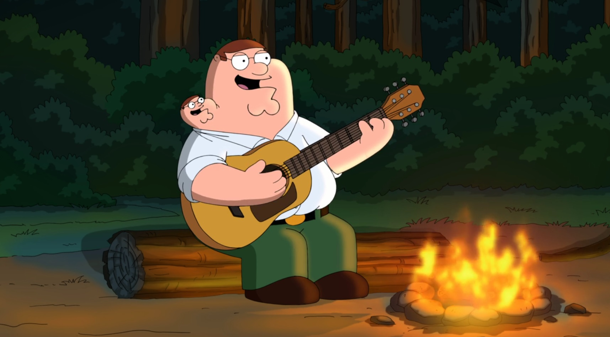

My Hero
Click here to return to my home page

Vestigial Peter
Click here to learn more about vestigial peter
Meet vestigial Peter. He makes an appearance on Family Guy in Season 12 on the second episode. He seems to be a miniature version of Peter Griffin, though he is much more energetic.
Peter Griffin decides to name his vestigial brother Chip. Chip adapts to the Griffin family quite well which makes Peter a little jealous.
Chip and Peter exchange words and decide to abandon each other for a period of time, but they decide to forgive each other in the end.
The episode perfectly encapsulates that family can work through anything.
I chose Chip as my hero because he is one that people should strive to be like. He brings out the best in people, and he is overall a lot of fun to talk to.
He is such a positive person that admires all the good in life. It's a nice change of pace from the many people focusing on the bad in the world.
Chip serves as a constant reminder to stay positive and optimistic. The episode is a must see because words don't do justice to Chip Griffin.